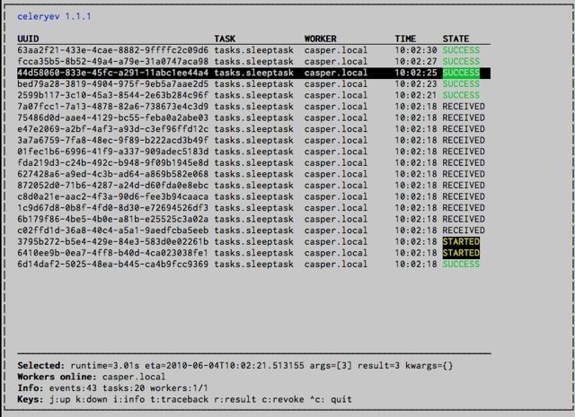

Routes: When using the dict route syntax, the exchange for a task
could disappear making the task unroutable.
See issue #158.
Test suite now passing on Python 2.4
No longer have to type PYTHONPATH=. to use celeryconfig in the current
directory.
This is accomplished by the default loader ensuring that the current
directory is in sys.path when loading the config module.
sys.path is reset to its original state after loading.
Adding the current working directory to sys.path without the user
knowing may be a security issue, as this means someone can drop a Python module in the users
directory that executes arbitrary commands. This was the original reason
not to do this, but if done only when loading the config module, this
means that the behavior will only apply to the modules imported in the
config module, which I think is a good compromise (certainly better than
just explicitly setting PYTHONPATH=. anyway)
Experimental Cassandra backend added.
Worker: SIGHUP handler accidentally propagated to worker pool processes.
Worker: Now handles overflow exceptions in time.mktime while parsing
the ETA field.
LoggerWrapper: Try to detect loggers logging back to stderr/stdout making
an infinite loop.
Added celery.task.control.inspect: Inspects a running worker.
Examples:
# Inspect a single worker>>> i=inspect('myworker.example.com')# Inspect several workers>>> i=inspect(['myworker.example.com','myworker2.example.com'])# Inspect all workers consuming on this vhost.>>> i=inspect()### Methods# Get currently executing tasks>>> i.active()# Get currently reserved tasks>>> i.reserved()# Get the current ETA schedule>>> i.scheduled()# Worker statistics and info>>> i.stats()# List of currently revoked tasks>>> i.revoked()# List of registered tasks>>> i.registered_tasks()
Remote control commands dump_active/dump_reserved/dump_schedule
now replies with detailed task requests.
Containing the original arguments and fields of the task requested.
In addition the remote control command set_loglevel has been added,
this only changes the log level for the main process.
Worker control command execution now catches errors and returns their
string representation in the reply.
Functional test suite added
celery.tests.functional.case contains utilities to start
and stop an embedded worker process, for use in functional testing.
multiprocessing.pool: Now handles encoding errors, so that pickling errors
doesn't crash the worker processes.
The remote control command replies wasn't working with RabbitMQ 1.8.0's
stricter equivalence checks.
If you've already hit this problem you may have to delete the
declaration:
$ camqadmexchange.deletecelerycrq
or:
$ pythonmanage.pycamqadmexchange.deletecelerycrq
A bug sneaked in the ETA scheduler that made it only able to execute
one task per second(!)
The scheduler sleeps between iterations so it doesn't consume too much CPU.
It keeps a list of the scheduled items sorted by time, at each iteration
it sleeps for the remaining time of the item with the nearest deadline.
If there are no ETA tasks it will sleep for a minimum amount of time, one
second by default.
A bug sneaked in here, making it sleep for one second for every task
that was scheduled. This has been fixed, so now it should move
tasks like hot knife through butter.
In addition a new setting has been added to control the minimum sleep
interval; CELERYD_ETA_SCHEDULER_PRECISION. A good
value for this would be a float between 0 and 1, depending
on the needed precision. A value of 0.8 means that when the ETA of a task
is met, it will take at most 0.8 seconds for the task to be moved to the
ready queue.
Pool: Supervisor didn't release the semaphore.
This would lead to a deadlock if all workers terminated prematurely.
Added Python version trove classifiers: 2.4, 2.5, 2.6 and 2.7
Tests now passing on Python 2.7.
Task.__reduce__: Tasks created using the task decorator can now be pickled.
Fixed "pending_xref" errors shown in the HTML rendering of the
documentation. Apparently this was caused by new changes in Sphinx 1.0b2.
Router classes in CELERY_ROUTES are now imported lazily.
Importing a router class in a module that also loads the Celery
environment would cause a circular dependency. This is solved
by importing it when needed after the environment is set up.
CELERY_ROUTES was broken if set to a single dict.
This example in the docs should now work again:
CELERY_ROUTES={'feed.tasks.import_feed':'feeds'}
CREATE_MISSING_QUEUES wasn't honored by apply_async.
New remote control command: stats
Dumps information about the worker, like pool process ids, and
total number of tasks executed by type.
Gives a list of tasks currently being executed by the worker.
By default arguments are passed through repr in case there
are arguments that's not JSON encodable. If you know
the arguments are JSON safe, you can pass the argument safe=True.
Celery 2.0 contains backward incompatible changes, the most important
being that the Django dependency has been removed so Celery no longer
supports Django out of the box, but instead as an add-on package
called https://pypi.org/project/django-celery/.
We're very sorry for breaking backwards compatibility, but there's
also many new and exciting features to make up for the time you lose
upgrading, so be sure to read the News section.
Quite a lot of potential users have been upset about the Django dependency,
so maybe this is a chance to get wider adoption by the Python community as
well.
Big thanks to all contributors, testers and users!
Importing djcelery will automatically setup Celery to use Django loader.
loader. It does this by setting the CELERY_LOADER environment variable to
"django" (it won't change it if a loader is already set).
When the Django loader is used, the "database" and "cache" result backend
aliases will point to the djcelery backends instead of the built-in backends,
and configuration will be read from the Django settings.
The database result backend is now using SQLAlchemy instead of the
Django ORM, see Supported Databases for a table of supported databases.
The DATABASE_* settings has been replaced by a single setting:
CELERY_RESULT_DBURI. The value here should be an
SQLAlchemy Connection String, some examples include:
Default (python) loader now prints warning on missing celeryconfig.py
instead of raising ImportError.
The worker raises ImproperlyConfigured if the configuration
isn't set up. This makes it possible to use --help etc., without having a
working configuration.
Also this makes it possible to use the client side of Celery without being
configured:
The following deprecated settings has been removed (as scheduled by
the Celery 弃用时间表):
Setting name
Replace with
CELERY_AMQP_CONSUMER_QUEUES
CELERY_QUEUES
CELERY_AMQP_EXCHANGE
CELERY_DEFAULT_EXCHANGE
CELERY_AMQP_EXCHANGE_TYPE
CELERY_DEFAULT_EXCHANGE_TYPE
CELERY_AMQP_CONSUMER_ROUTING_KEY
CELERY_QUEUES
CELERY_AMQP_PUBLISHER_ROUTING_KEY
CELERY_DEFAULT_ROUTING_KEY
The celery.task.rest module has been removed, use celery.task.http
instead (as scheduled by the Celery 弃用时间表).
It's no longer allowed to skip the class name in loader names.
(as scheduled by the Celery 弃用时间表):
Assuming the implicit Loader class name is no longer supported,
for example, if you use:
CELERY_LOADER='myapp.loaders'
You need to include the loader class name, like this:
CELERY_LOADER='myapp.loaders.Loader'
CELERY_TASK_RESULT_EXPIRES now defaults to 1 day.
Previous default setting was to expire in 5 days.
AMQP backend: Don't use different values for auto_delete.
This bug became visible with RabbitMQ 1.8.0, which no longer
allows conflicting declarations for the auto_delete and durable settings.
If you've already used Celery with this backend chances are you
have to delete the previous declaration:
$ camqadmexchange.deleteceleryresults
Now uses pickle instead of cPickle on Python versions <= 2.5
cPickle is broken in Python <= 2.5.
It unsafely and incorrectly uses relative instead of absolute imports,
so for example:
exceptions.KeyError
becomes:
celery.exceptions.KeyError
Your best choice is to upgrade to Python 2.6,
as while the pure pickle version has worse performance,
it is the only safe option for older Python versions.
This is a simple monitor allowing you to see what tasks are
executing in real-time and investigate tracebacks and results of ready
tasks. It also enables you to set new rate limits and revoke tasks.
Screenshot:

If you run celeryev with the -d switch it will act as an event
dumper, simply dumping the events it receives to standard out:
Worker: Now waits for available pool processes before applying new
tasks to the pool.
This means it doesn't have to wait for dozens of tasks to finish at shutdown
because it has applied prefetched tasks without having any pool
processes available to immediately accept them.
See issue #122.
New built-in way to do task callbacks using
subtask.
This feature is added for easily setting up routing using the -Q
option to the worker:
$ celeryd-Qvideo,image
See the new routing section of the User Guide for more information:
路由任务/Tasks.
New Task option: Task.queue
If set, message options will be taken from the corresponding entry
in CELERY_QUEUES. exchange, exchange_type and routing_key
will be ignored
Added support for task soft and hard time limits.
New settings added:
CELERYD_TASK_TIME_LIMIT
Hard time limit. The worker processing the task will be killed and
replaced with a new one when this is exceeded.
CELERYD_TASK_SOFT_TIME_LIMIT
Soft time limit. The SoftTimeLimitExceeded
exception will be raised when this is exceeded. The task can catch
this to, for example, clean up before the hard time limit comes.
New command-line arguments to celeryd added:
--time-limit and --soft-time-limit.
What's left?
This won't work on platforms not supporting signals (and specifically
the SIGUSR1 signal) yet. So an alternative the ability to disable
the feature all together on nonconforming platforms must be implemented.
Also when the hard time limit is exceeded, the task result should
be a TimeLimitExceeded exception.
Test suite is now passing without a running broker, using the carrot
in-memory backend.
Log output is now available in colors.
Log level
Color
DEBUG
Blue
WARNING
Yellow
CRITICAL
Magenta
ERROR
Red
This is only enabled when the log output is a tty.
You can explicitly enable/disable this feature using the
CELERYD_LOG_COLOR setting.
Added support for task router classes (like the django multi-db routers)
New setting: CELERY_ROUTES
This is a single, or a list of routers to traverse when
sending tasks. Dictionaries in this list converts to a
celery.routes.MapRoute instance.
route_for_task may return a string or a dict. A string then means
it's a queue name in CELERY_QUEUES, a dict means it's a custom route.
When sending tasks, the routers are consulted in order. The first
router that doesn't return None is the route to use. The message options
is then merged with the found route settings, where the routers settings
have priority.
Defines the maximum number of tasks a pool worker can process before
the process is terminated and replaced by a new one.
Revoked tasks now marked with state REVOKED, and result.get()
will now raise TaskRevokedError.
celery.task.control.ping() now works as expected.
apply(throw=True) / CELERY_EAGER_PROPAGATES_EXCEPTIONS:
Makes eager execution re-raise task errors.
New signal: ~celery.signals.worker_process_init: Sent inside the
pool worker process at init.
Worker: celeryworker-Q option: Ability to specify list of queues
to use, disabling other configured queues.
For example, if CELERY_QUEUES defines four
queues: image, video, data and default, the following
command would make the worker only consume from the image and video
queues:
$ celeryd-Qimage,video
Worker: New return value for the revoke control command:
Now returns:
{'ok':'task $id revoked'}
instead of True.
Worker: Can now enable/disable events using remote control
Removed top-level tests directory. Test config now in celery.tests.config
This means running the unit tests doesn't require any special setup.
celery/tests/__init__ now configures the CELERY_CONFIG_MODULE
and CELERY_LOADER environment variables, so when nosetests
imports that, the unit test environment is all set up.
Before you run the tests you need to install the test requirements:
$ pipinstall-rrequirements/test.txt
Running all tests:
$ nosetests
Specifying the tests to run:
$ nosetestscelery.tests.test_task
Producing HTML coverage:
$ nosetests--with-coverage3
The coverage output is then located in celery/tests/cover/index.html.
Worker: New option --version: Dump version info and exit.
celeryd-multi: Tool for shell scripts
to start multiple workers.
Some examples:
Advanced example with 10 workers:
Three of the workers processes the images and video queue
Two of the workers processes the data queue with loglevel DEBUG